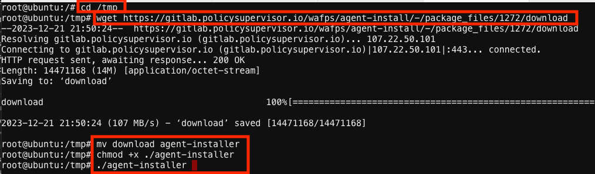
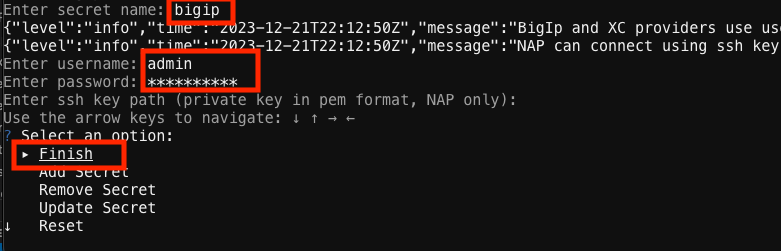

F5 Distributed Cloud > F5 Distributed Cloud - WAF Policy Supervisor Source | Edit on
Lab 1: Connecting Policy Supervisor to BIG-IP WAF¶
Policy Supervisor is an online unified configuration solution for security policies, built with the purposes of managing and converting configuration across multiple F5 Web App Firewall solutions. It enables operators of F5 WAF technologies to easily convert policy files from BIG-IP AWAF, F5 Distributed Cloud WAF, and NGINX NAP formats. In the process Policy Supervisor generates and uses an intermediate JSON-based common declarative format called CDP (Common Declarative Policy) for policy lifecycle management. After a policy is converted to CDP, it can then be deployed to any supported WAF Solution, which is referred to as a Provider in Policy Supervisor lingo.
Please refer to the Tutorial in the GitHub repo (https://github.com/f5devcentral/ps-convert) for currently supported Provider types.
Policy Supervisor provides a graphical interface for visual policy creation, editing and management for traditional SecOps personas.
Task 1: Create a new Policy Supervisor Provider¶
The following steps will walk you through connecting Policy Supervisor to your BIG-IP WAF.
The first step is to create a Provider.
A Provider is a generic name used by Policy Supervisor to indicate an F5 Web App Firewall. The supported Provider types are: F5 Distributed Cloud WAF, BIG-IP Advanced WAF (AWAF), and NGINX Application Protection (NAP). Add and connect providers in Policy Supervisor to enable the deployment of your configuration policies across endpoints and load balancers for complete WAF protection.
When you add a BIG-IP instance as a provider, you must first set up an agent and associated secret on the private network to enable a secure connection between the BIG-IP instance and Policy Supervisor.
- The agent must be connected to the same private network where the provider is running to ensure a secure connection between Policy Supervisor and the provider.
- The agent machine must also have outbound Internet access for connectivity back to Policy Supervisor.
- The Policy Supervisor Agent is a Linux binary that is first installed on this machine/VM and is registered using a unique token generated in the Policy Supervisor UI for your Policy Supervisor workspace only.
- The Agent is used to create Secrets, which are stored in your environment only and are never transmitted outside of your network.
- These secrets are used to connect to your BIG-IP AWAF or NGINX NAP instance to execute various policy-related functions within a Docker container environment on that machine/VM.
Note
Prerequisites: Policy Supervisor Agent requires the following applications to be installed on your Linux machine/VM:
- Docker
- wget
Access the F5 Policy Supervisor console at https://policysupervisor.io as instructed in the previous Introduction section of this lab guide.
Policy Supervisor uses the F5 Distributed Cloud Console credentials.
|
 |
|
 |
|
 |
|
 |
| 5. At the bottom of the Package Registry page, right-click on the agent-installer file name and select Copy Link. (This URL will be required in *Task 2 below.)* |
Note
The URL for the agent-installer file changes from time to time when it is updated.
Task 2: Install a Policy Supervisor Agent¶
Next, we will use the token and the URL obtained in task 1 above to install the Agent on your UDF virtual lab environment. The Agent will be installed on your SuperJumpHost Linux machine, which is connected to the same management network as your BIG-IP. The SuperJumpHost is pre-configured in your lab environment with permission to communicate with the Policy Supervisor across the Internet.
|
 |
|
 |
|
 |
|
|  |
|
 |
|
|  |
{kind=link}
{kind=link}
Task 3: Finish adding a first provider in Policy Supervisor¶
The configuration of the new Provider can be completed now that the Agent is ready.
Go to https://policysupervisor.io again and click “Done” (return to the Add Provider Pane with BIG-IP selected for the Provider Type). Select the new udf option that should now be visible on the dropdown list for the Agent field (the provider that was created in the previous task). Choose the new bigip option that should now be visible on the drop-down list for the Secrets field (the secret that was created in the previous task) and click Continue. The Provider Name and Provider URL fields will now appear. Type bigip1 for the Provider Name and type https://10.1.1.6 for the Provider URL. |

|
| Click the Test Connection button and wait for the tests to complete successfully. |

|
Task 4: Add a 2nd BIG-IP provider in Policy Supervisor¶
We will re-use the same udf Agent and bigip Secret created in Task 2 above to manage the WAF policies on your 2nd BIG-IP because they areconnected to the same management network in your UDF virtual lab environment.
Click the Add another Provider button to add the second BIG-IP appliance in your virtual lab environment. Select the BIG-IP option for the provider type. Select the udf option for Agent. Select the bigip option for Secret (the two BIG-IP’s have been configured with the same password). Click Continue. Type bigip2 for the Provider Name and type https://10.1.1.7 for the Provider URL. Click the Test Connection button and wait for the tests to complete successfully. |

|
| Click the Got to overview link. |

|
Click to select the “bigip1” provider. Click “Ingest Policies”. Select the discovered policy (i.e., “My_ASM_Rapid_Deployment_Po…”). Click Continue. Click Next. Type “Ingest from bigip1” for the quired “commit message”. Click ” Save & Ingest Policy” and wait for the ingestion to complete successfully. Click “Policies Overview”. Select the policy. Click “Deploy”. Select the “bigip2” option from the “Provider” dropdown. Type “Deploy to bigip2” in the commit message text box. Click the “Conversion Summary” button and wait for the Conversion Summary screen to appear. Click the “Save & Continue” button. Click the “Continue Deployment” button. Select the “service” Virtual server from the dropdown list. Click the “Next button. Click the “Deploy” button. |